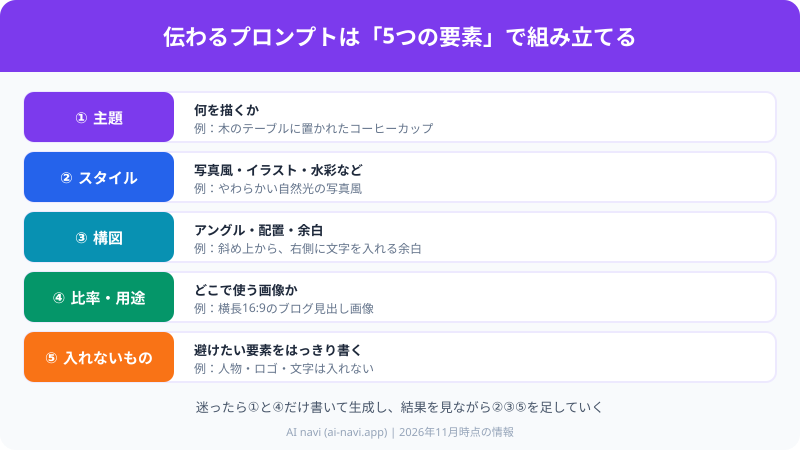

ChatGPTで画像が作れるって聞いたけど、専用のアプリや有料プランが必要なんですか？
いつものChatGPTの画面で、そのまま頼めば作ってくれます。無料アカウントでも使えるので、まずは1枚作ってみて、足りなくなったら有料を考える順番で十分です。
ChatGPTの画像生成でできること
ChatGPTの画像生成機能は「ChatGPT Images」と呼ばれ、チャットと同じ画面で使えます。OpenAIのヘルプによると、2026年11月時点ですべてのプランで提供され、ウェブ版・iPhoneアプリ・Androidアプリのどれからでも利用可能です。
会話の延長で画像を頼めるのが最大の特徴です。「もう少し明るく」「人物を消して」のように、言葉で追加の注文を出すと前の画像をもとに直してくれます。専用の画像生成ツールのように細かいパラメータを覚える必要はありません。
| できること | 内容 |
|---|---|
| 文章から画像を作る | 「〜の画像を作って」と書くだけで生成。写真風・イラスト・アイコンなどタッチも指定できる |
| 手持ちの画像を編集 | 写真をアップロードして背景変更・不要物の削除・スタイル変換などを指示 |
| 一部だけ描き直す | 範囲選択ツールで指定した部分だけを変更 |
| 縦横比の指定 | 比率の選択メニューか、プロンプト内の指定で横長・縦長・正方形に対応 |
| テンプレートから作る | サイドバーの「画像」からポスターやロゴなどの型を選び、質問に答えて仕上げる |
| ループするGIF | 動くGIFの作成や、静止画を動かす指示にも対応（アップロードしたGIFの編集は不可） |
使えるAI画像生成サービスはChatGPT以外にもたくさんあります。ツールごとの無料枠や画風の違いを比べたい方は「AI画像生成おすすめ15選」で整理しています。この記事では、ChatGPTに絞って操作手順を解説します。
ChatGPTで画像を作るやり方【4ステップ】
PCでもスマホでも流れは同じです。ここではPCのブラウザ版を基準に説明し、スマホで違う部分は補足します。
ステップ1：ChatGPTにログインする
PCならブラウザで chatgpt.com を開き、スマホなら公式の「ChatGPT」アプリを入れてログインします。アカウントをまだ持っていない場合は、メールアドレスかGoogleアカウントなどで無料登録できます。登録の詳しい流れは「ChatGPTの始め方・使い方」を参照してください。
アプリストアにはChatGPTと似た名前の非公式アプリも並んでいます。開発元が「OpenAI」になっているかを確認してから入れましょう。
ステップ2：作りたい画像を日本語で指示する
入力欄に、作りたい画像の内容を書いて送信します。英語で書く必要はありません。
サイドバーの「画像」を開くと、ポスターやロゴなどのテンプレートも選べます。何を書けばいいか迷う場合は、テンプレートから入ると質問に答える形で必要な情報を埋められます。
ステップ3：会話で修正して仕上げる
1回目で理想どおりになることは少ないので、結果を見ながら追加で注文します。「背景を白にして」「カップを右に寄せて」のように、変えたい点だけを短く伝えるのがコツです。
一部だけ直したいときは、画像をクリックして編集画面を開き、選択ツールで範囲を塗ってから指示を書きます。スマホでは画像を開いて「編集」または「選択」をタップし、範囲を指定して「次へ」から変更内容を入力します。
ステップ4：画像を保存する
完成した画像を開くと、コピー・保存・共有のボタンが表示されます。「保存」を押すと端末にダウンロードされます。作った画像はサイドバーの「画像」にも自動で残るので、あとから探し直すこともできます。
画像を消したいときは、画像そのものではなく「その画像を作った会話」を削除する仕組みです。人に見せたくない試作が残っている場合は、会話ごと整理しておきましょう。
無料版で画像は何枚作れる？回数制限の仕組み
いちばん多い疑問が「無料で何枚まで作れるのか」です。2026年11月時点の公式ヘルプ（無料プランのFAQ）には、画像生成について次のように書かれています。
- 画像生成・ファイルのアップロード・音声などのツールは、会話とは別の利用上限を持つ
- 上限に達するとChatGPT上で通知され、時間をおけば再び使える
- Plus・Pro・Businessにアップグレードすると利用状況がリセットされる
一方で、「1日◯枚」という具体的な数字は公式に示されていません。2025年に無料ユーザーへ新しい画像生成が開放された際には「1日3枚程度」と報じられましたが、上限は需要に応じて変わるとされており、現在も同じとは限りません。ネット上の「無料は1日2枚」といった情報は、古い時期のものが混ざっている点に注意してください。
| 項目 | 無料版 | Plus（月3,000円前後） |
|---|---|---|
| 画像生成 | 使える（上限あり・枚数は非公開） | 使える（無料版より多く生成できる） |
| 画像の編集・範囲選択 | 使える | 使える |
| 考えながら作る画像生成（Images with thinking） | 対象外 | 使える |
| 上限に達したとき | 表示される時刻まで待つ | 無料版より上限に当たりにくい |
※2026年11月時点のOpenAI公式ヘルプをもとに作成。上限や提供範囲は予告なく変わることがあります。
画像が作れない・止まるときの対処
- 上限の通知が出た：表示された時刻まで待つ。待つ間にプロンプトを書き直しておくと、再開後の試行回数を節約できる
- 生成を断られた：実在の人物、既存キャラクター、暴力的・性的な内容などは利用ポリシーにより断られることがある。表現を一般的なものに変える
- 途中で止まる・真っ白のまま：ページを再読み込みするか、新しい会話で同じ指示を出し直す
- ログインしていない：画像生成はログインした状態で使う。未ログインのまま試している場合はまずログインする
会話そのものの回数制限やリセットの仕組みについては「ChatGPT無料版の制限まとめ」で詳しく扱っています。有料プランの料金を比べたい方は「ChatGPTの料金プラン」をどうぞ。
そのまま使えるプロンプト例12選
画像の指示は、次の5つの要素を意識すると伝わりやすくなります。全部を最初から書く必要はなく、まず「主題」と「比率・用途」だけで生成し、結果を見ながら足していくと効率的です。

以下は用途別のプロンプト例です。【 】の部分を自分の内容に置き換えて使ってください。
| 用途 | プロンプト例 |
|---|---|
| ブログのアイキャッチ | 【在宅ワーク】をテーマにしたアイキャッチ画像。明るい部屋でノートPCに向かう机まわり、人物なし、写真風、横長16:9、右側に文字を置ける余白 |
| SNS投稿 | 【秋の新メニュー】の告知用画像。【栗のパフェ】を真上から撮った写真風、温かみのある色、正方形、文字は入れない |
| アイコン | 【猫】をモチーフにしたシンプルなアイコン。丸い枠、フラットデザイン、2色まで、背景は白 |
| 資料の挿絵 | 【チームでの情報共有】を表すイラスト。ビジネス資料向けの落ち着いた青系、人物は簡略化、横長 |
| 商品イメージ | 【白いマグカップ】の商品イメージ。木目の台の上、柔らかい自然光、背景はぼかす、写真風 |
| 図解の下絵 | 【申し込みから利用開始まで】の流れを3ステップで表す図。矢印でつなぐ、アイコン中心、文字は最小限 |
| ロゴ案 | 【カフェ】のロゴ案を3パターン。シンプル、線の細いデザイン、店名の文字は入れずマークだけ |
| イラスト | 【雨の日の街角】の水彩画風イラスト。傘をさす人の後ろ姿、青と灰色を中心に |
| 背景素材 | 【プレゼン資料】の背景に使える抽象的な模様。淡い緑のグラデーション、主張しすぎない、横長16:9 |
| 写真の編集 | （写真を添付して）この写真の背景を真っ白にして、商品だけを残して |
| スタイル変換 | （写真を添付して）この風景写真を、色鉛筆で描いたやさしいイラスト風にして |
| 季節の挨拶 | 【年賀状】用のイラスト。【干支の動物】を可愛くデフォルメ、和風の配色、縦長、余白多め |
画像の中に日本語の文字を入れると、文字が崩れたり誤字が出たりすることがあります。見出しや店名など正確さが必要な文字は、画像には入れず「文字を置く余白」だけを作ってもらい、あとからデザインツールで重ねるほうが確実です。
文字入れ・サイズ調整はデザインツールで：ChatGPTで作った画像をMiriCanvasに読み込めば、テンプレートに当てはめて文字を入れ、SNSやバナー用のサイズに書き出せます。AI画像生成や背景除去の機能もあり、無料で始められます。
スポンサー
思いどおりの画像に近づける修正のコツ
生成された画像が微妙にずれていたとき、最初から作り直すより、今の画像を土台に直していくほうが早く仕上がります。修正で意識したいポイントは次の5つです。
1. 変えたい点を1回に1〜2個だけ伝える
「背景を白にして、人物を増やして、色を暖色にして、横長にして」とまとめて頼むと、どれかが反映されなかったり、気に入っていた部分まで変わったりしがちです。優先度の高い修正から順に、少しずつ頼みましょう。
2. 残したい部分をはっきり言う
「カップの形と色はそのままで、背景だけ変えて」のように、変えない部分を指定すると、全体が描き直されるのを防げます。
3. 一部だけ直すなら範囲選択ツールを使う
編集画面の選択ツールで直したい範囲を塗ってから指示すると、そこを中心に描き直されます。ただし公式ヘルプでも「選択範囲は常に正確ではなく、範囲外まで変わることがある」と案内されています。仕上がりを確認し、気になる場合は「元に戻す」で戻しましょう。
4. 縦横比は最初に決める
あとから比率を変えると構図が大きく変わることがあります。ブログ用なら横長16:9、スマホ向けのストーリーズなら縦長9:16など、使う場所を決めてから生成すると手戻りが減ります。
5. うまくいかないときは新しい会話でやり直す
修正を重ねるうちに、前の指示が混ざって意図しない画像になることがあります。そんなときは、これまでの修正内容を1つのプロンプトにまとめ直し、新しい会話で生成し直すとすっきりします。
同じキャラクターを何枚も描いてほしいときは、どう頼めばいいですか？
気に入った1枚ができたら、その画像を添付して「この人物と同じ見た目で、別のポーズを」と頼むのが確実です。髪型・服の色・体型など特徴を文章でも書き添えると、ぶれが小さくなります。
商用利用するときの注意点
ブログやSNS、販促物にChatGPTの画像を使いたい方も多いはずです。ここでは規約と著作権の両面から、公開前に確認したいポイントを整理します。
OpenAIの規約上の扱い
OpenAIの利用規約では、法律で認められる範囲で、出力（生成された画像を含む）の権利は利用者に帰属するとされています。そのため、規約上は商用目的での利用も制限されていません。ただし規約には次のような注意書きもあります。
- 出力は唯一のものとは限らず、他の利用者に似た画像が生成されることがある
- 出力が用途に適しているかは、利用者自身が確認する責任がある
- 利用ポリシーに反する使い方（他人の権利を侵害する用途など）は認められない
日本の著作権で気をつけたいこと
文化庁の「AIと著作権に関する考え方について」では、AIで生成した画像でも、既存の作品との類似性と、既存の作品をもとにしたこと（依拠性）が認められれば、著作権侵害になりうると整理されています。とくに注意したいのは次のケースです。
- アニメや漫画の既存キャラクターに似せた画像
- 特定の作品や作家の絵を添付し、そっくりに描かせた画像
- 実在の人物の顔や、企業のロゴ・商標を含む画像
また、AIが自動で作った画像は、人の創作的な関与が小さい場合、著作物として保護されない可能性があります。自分の画像を他人に使われても権利を主張しにくい場面がある点も、事業で使う際は覚えておきましょう。
公開前のチェックリスト
- 特定のキャラクター・作品・作家名をプロンプトに入れていないか
- 実在の人物やブランドのロゴが写り込んでいないか
- 画像検索などで、よく似た既存の作品がないか
- 文字の誤りや、手指・物の形の不自然さが残っていないか
ツールごとの商用利用の可否は「AI画像生成の商用利用OK・NG一覧」で比較しています。無料で使える他の画像生成ツールを探している方は「AI画像生成 無料おすすめ10選」も参考にしてください。
よくある質問
まとめ
最初は「主題」と「どこで使うか」だけ書いて1枚作り、足りない部分を会話で足していくのが近道です。無料版の上限に何度も当たるようになったら、そこで初めてPlusを検討すれば十分です。
ChatGPTの画像生成は、無料アカウントでもいつもの画面から使えます。手順は「ログイン → 日本語で指示 → 会話で修正 → 保存」の4ステップだけです。
ChatGPT画像生成のポイント
- やり方：「〜の画像を作って」と書けば始まる。サイドバーの「画像」からテンプレートも使える
- 無料版の回数：会話とは別の上限があり、枚数は非公開。上限に達したら時間をおく
- プロンプト：主題・スタイル・構図・比率・入れないものの5要素で組み立てる
- 修正：1回に1〜2点ずつ。一部だけなら範囲選択ツールを使う
- 商用利用：規約上は可能。既存作品・実在人物・ロゴに似た画像は避ける
ChatGPTで作った画像を、文字入りのバナーやSNS投稿に仕上げるなら
MiriCanvasを無料で試してみる →参考：
OpenAI Help Center「Images in ChatGPT」
OpenAI Help Center「ChatGPT Free Tier FAQ」
OpenAI「Terms of Use」
文化庁「AIと著作権について」
Tom's Guide（2025年の無料開放時の報道）
※料金・上限・機能は2026年11月時点の情報です。最新の内容は各公式サイトでご確認ください。